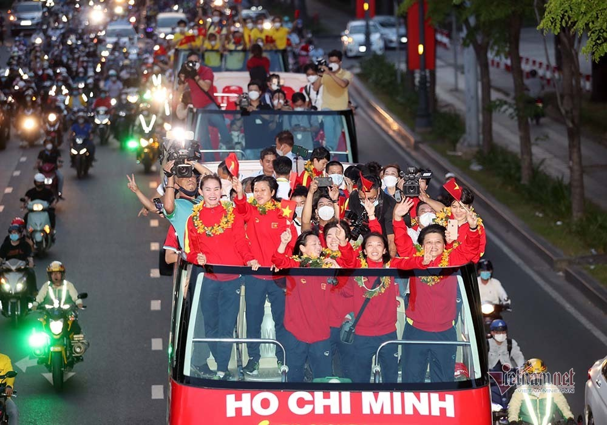
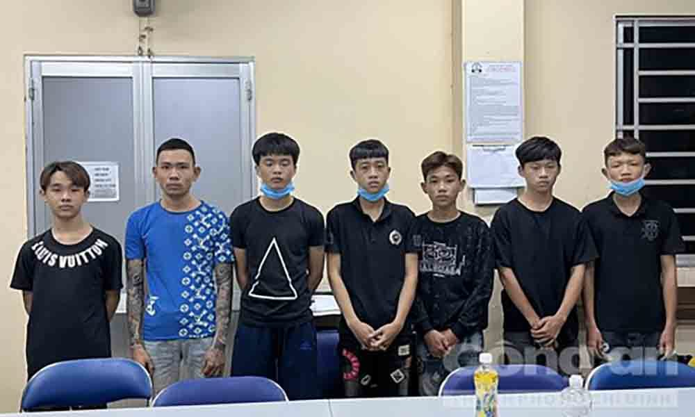
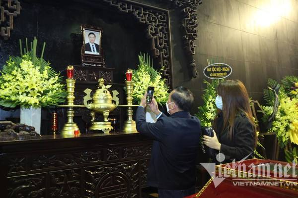

|  |
TP.HCM ngập cờ hoa đón những người hùng tuyển nữ Việt NamHơn 17h chuyến bay đưa 11 thành viên tuyển nữ Việt Nam thuộc biên chế đội nữ TP.HCM mới đáp xuống sân bay Tân Sơn Nhất. Thế nhưng trước đó hàng giờ, đại diện lãnh đạo Thành phố, người hâm mộ và |
|  |
Bắt băng cướp manh động gây án liên tỉnhHiện cơ quan CSĐT Công an TP.HCM đang tạm giữ hình sự 8 đối tượng để lấy lời khai. Trong đó, đối tượng lớn nhất 22 tuổi và nhỏ nhất 16 tuổi. |
|  |
Hiện cơ quan CSĐT Công an TP.HCM đang tạm giữ hình sự 8 đối tượng để lấy lời khai. Trong đó, đối tượng lớn nhất 22 tuổi và nhỏ nhất 16 tuổi.Chiều 11/2, người thân, bạn bè, người hâm mộ đã đến nhà tang lễ Quốc gia để tiễn đưa NSƯT Tiến Hợi về nơi an nghỉ cuối cùng. |